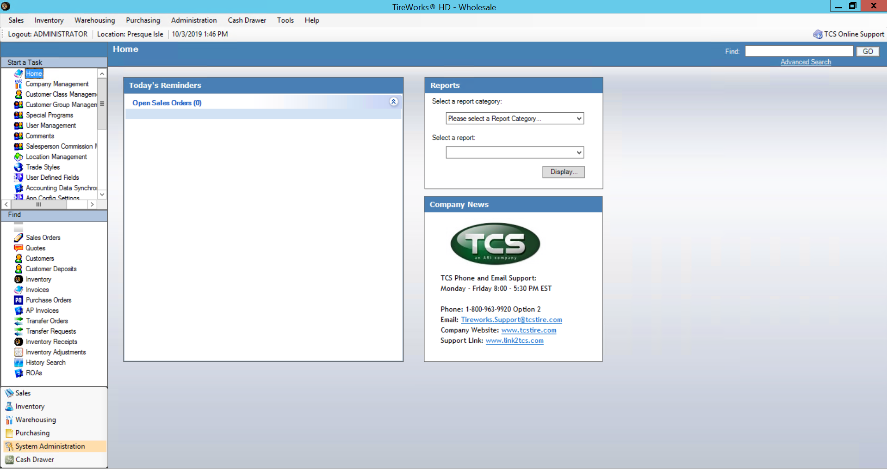
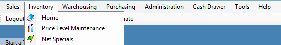
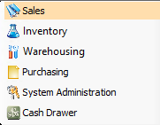
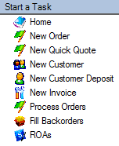
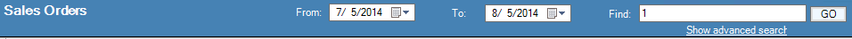

Home Page

Logout
Shows User logged in along with location logged in to.
- Locations can be changed as easily as clicking location with your cursor and selecting from the list of available locations.
- If logging into multiple locations on a regular basis, periodically verify the location logged into.
Start a Task
Can be done one of two ways. This is a personal preference, both take you to the same place.
- By hovering over selected module in tool bar shown below

- Selecting module on left hand side of home screen and then selecting from Start a Task list


Tools
Allows additional options by user based on access rights
- Options – Allows the option of previewing or sending directly to printer based on report type along with the number of copies to print by default. Also allows for sales order, invoicing and inventory search keystroke setup.
- Configure Search Results – Allows the option to customize by user search results screens based on search type.
- User Defined Import – Allows user defined field values to be imported based on access rights.
- Customer Price Lists – Allows customer price lists to be generated based on customer price level and any additional customer price rules.
- Integration Manager – Allows reintegration of documents to financial software based on access rights.
Help
Displays software version installed (i.e. 14.3.1.5). First number designates year, second designates
Quarter.
Find
Gives access to all current and historical data based on data type (Quotes, Sales Orders, Transfers, Customers, Customer Deposits, Invoices, Inventory……)
- Lists documents/customers by most current. Data that displays is determined by the configuration of sales order search results. Displays first several hundred records. Beyond that Search will need to be used.

- By default, search results will display only data from the location you are logged into.
- Use “Show Advanced Search” to display individually specified or all wholesale locations.
Reports
Gives visibility to a wide range of reports defined by report category and selection of report. Ability to display, print, and export reports based on criteria selection available in each report.
Today’s Reminders
Displays all open sales orders for user logged in and gives the ability to open order directly from home screen.